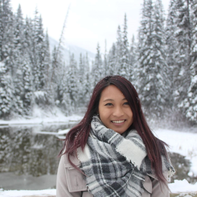

Full-Stack Web Developer recently certified from UCLA Extension’s Coding Bootcamp with a B.A. degree in Biochemistry & Molecular Biology. Developed new skills in HTML, CSS, Javascript, React.js, Node.js, and responsive web designs to build user-friendly applications and in Sequelize, MySQL, NoSQL, and RESTful API calls to handle back-end databases. My strengths in critical-thinking, open-communication and teamwork were applied with each project. For my recent project, my team and I designed and developed a MERN app, called MedBuddy, that is tailored to users who routinely take medication and wants to organize a daily schedule to remind them to take their medications. As a quick-learner who can work independently or collaboratively, I enjoy the puzzle-like challenges that coding brings and the levels of difficulty every time I peel off a new layer. Enthusiastic to be a challenge-driven, life-long learner as new skills can be acquired with every new project.